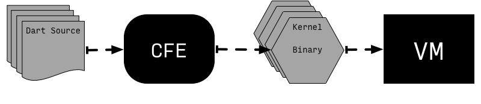
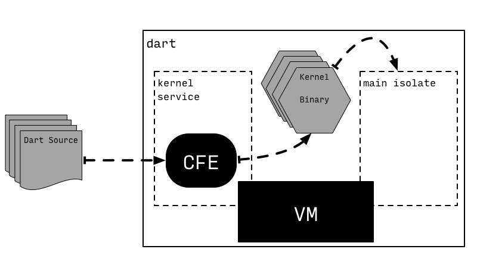
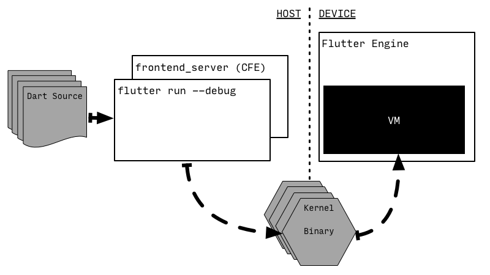

isolate, dart语言中常见的单词，形容内存、运行的划分独立
这里考究以下单词的来历
“standing detached from others of its kind,”
来自拉丁语insulatus“made into an island,”
English at first used the French word (isole, also isole’d, c. 1750), then after isolate (v.) became an English word, isolated became its past participle.
源码 JIT 运行
从 Dart 2 开始，VM 就不在具有直接从文字源码中直接执行的能力，而是 VM 期望被给到一份 内核二进制(Kernel binaries) (也被称为 dill files)， 它包含了序列化后的 Kernel ASTs。这个把 Dart 源码翻译成 Kernel AST 的任务是由 common front-end(CFE) 处理，它由 Dart 编写，在不同的 Dart 工具链中共享 (例如： VM, dart2js, Dart Dev Compiler)。
关键词:
VM需要的 ->内核二进制\Kernel binaries\dill files
提前准备的 ->Kernel ASTscommon front-end(CFE)

为了保障直接从源码通过独立 Dart 命令执行的便捷性。Dart 也执行了一个辅助独立服务，叫做 kernel service，他控制了把 Dart 源码编译到内核代码，然后 VM 就直接执行内核二进制。
关键词:
提前干活的 ->kernel service独立服务

然而，这个步骤并不是唯一从 CFE 到 VM 执行 Dart 代码的方式。例如，Flutter 完全分离了 编译(compilation) 到 内核(kernel) 以及 从内核执行(execution from Kernel) 的步骤，放到了不同的设备中：开发机器负责编译，目标移动设备则负责执行，通过 flutter 工具发送接收内核二进制文件。
关键词:
Flutter不一样，CFE编译开发时编译，VM+CFE设备端运行

- 一条固定线程 frontend_server, 它是 CFEE 的简单包装，
- 附带了简单的 Flutter 特殊的 Kernel-to-Kernel 转换
- frontend_server 编译 Dart 源码到内核文件
- flutter 工具随后把它转发给设备
- 为了 hot reload 功能